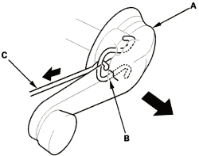
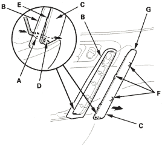
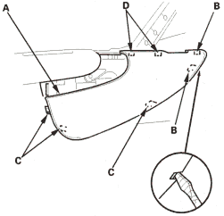
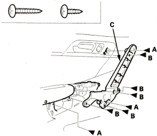

Special Tools Required
Trim pad remover, Snap-on A 177 or equivalent, commercially available.
NOTE: When prying with a flat-tip screwdriver, wrap it with protective tape and apply protective tape around the related parts, to prevent damage.
- Remove the mirror mount cover, refer to the '01 Civic Shop Manual on this CD (see step 2 on page 20-170).
- If applicable, remove the regulator handle (A) by pulling the clip (B) out with a wire hook (C).

- Insert a hex wrench through the hole (A) in the grip base (B). Push the grip cover (C) out to release the hook (D) and tab (E), and pull out the cover to release the tabs (F) and hook (G) by hand, then remove the cover.

- Remove the armrest cover (A). Take care not to scratch the door panel.
- Pry out the front edge of the cover to release the hooks (B).
- Pry out the bottom and rear edge of the cover to release the hooks (C).
- Pry out along the top to release the tabs (D).

- Remove the screws (A, B) and release the tabs (C), then remove the grip base (D). Remove the screw (A) securing the door panel from the armrest portion.
Fastener Locations
A  : Screw, 3 B : Screw, 5
: Screw, 3 B : Screw, 5
